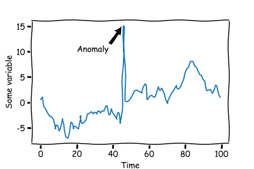

<!DOCTYPE html>
<html lang="en">

<head>
  <meta charset="UTF-8" />
  <meta http-equiv="X-UA-Compatible" content="IE=edge" />
  <meta name="viewport" content="width=device-width, initial-scale=1.0" />
  <title>Map</title>
  <style>
    svg.markmap {
      width: 100%;
      height: 100vh;
    }
  </style>
  <script src="https://cdn.jsdelivr.net/npm/markmap-autoloader@0.15.2"></script>
</head>

<body>
  <div class="markmap">

    <script type="text/template">
      ---
      markmap:
        <!-- maxWidth:  -->
        colorFreezeLevel: 6
        duration: 1000
        initialExpandLevel: -1
        extraJs: [""]
        extraCss: [""]
      ---
      - **Machine Learning**
        - **Pre-requisites**
          - **Maths**
            - **Calculus**
              - **Foundation**
                - **Functions**: 
                  <br>$f: X \to Y$
                  Relation b/w a set of inputs (X) and a set of possible outputs (Y)
                  where each input (x) is related to exactly one output (y).
                  - <br>**ML example**: Linear Regression Model
                    - **Standard Form Equations**
                      - **Single Feature**: $\hat{y} = \beta_0 + \beta_1 x + \varepsilon$
                        - **Proof**: $y = mx + c \equiv \hat{y} = \beta_0 + \beta_1 x + \varepsilon$
                          $y = mx + c$ (standard form)
                          $\rightarrow y = c + mx$ (rearrange)
                          $\rightarrow y = \beta_0 + \beta_1 x$ (rename constants)
                          $\rightarrow \hat{y} = \beta_0 + \beta_1 x + \varepsilon$ (add error term $\varepsilon$ to account for noise)
                      - <br>**Multiple Features**: $\hat{y} = \beta_0 + \beta_1 x_1 + \beta_2 x_2 + \dots + \beta_n x_n + \varepsilon$
                        - **$\hat{y}$ (Predicted Value)**
                          The value predicted by the model.
                          - **Target** variable (ML)
                          - **Output** variable (ML)
                          - **Label** (ML)
                          - **Prediction** variable (Statistics)
                          - **Dependent** variable (Statistics)
                          - **Response** variable (Statistics)
                        - **$x_1, x_2, \dots, x_n$ (Input Features)**
                          The input variables used to make predictions.
                          - **Features** (ML)
                          - **Predictor** variables (Statistics)
                          - **Independent** variables (Statistics)
                          - **Explanatory** variables (Statistics)
                          - **Input** variables (Statistics)
                        - **$\beta_0$ (Intercept Term)**
                          The value of $\hat{y}$ when all input features are zero.
                          - **Intercept** term (Statistics)
                          - Bias term (not to be confused with algorithmic bias) (ML)
                          - **Constant** term (Statistics)
                        - **$\beta_1, \beta_2, \dots, \beta_n$ (Model Coefficients)**
                          The weights applied to the input features.
                          - **Weights** (ML)
                          - **Parameters** (ML)
                          - **Coefficients** (Statistics)
                        - **$\varepsilon$ (Error Term)**
                          The difference between the predicted value and the true value.
                          - **Noise** (ML)
                          - **Unexplained variation** (Statistics)
                          - **Residuals** (Statistics)
                          - **Random error** (Statistics)
                    - **Matrix Form Equations**
                      - $\hat{y} = X\beta + \varepsilon$
                        - **$\hat{y}$ (Predicted Value)**
                          The value predicted by the model.
                        - **$X$ (Design Matrix)**
                          A matrix of input features.
                        - **$\beta$ (Coefficient Vector)**
                          A vector of model coefficients.
                        - **$\varepsilon$ (Error Vector)**
                          The difference between the predicted value and the true value.
                - **Limits**: $\lim_{x \to a} f(x) = L$
                - **Continuity**
              - **Differential Calculus** <!-- fold -->
                - **Derivatives**
                - **Partial Derivatives**
              - **Multivariable Calculus** <!-- fold -->
                - **Gradient**
                - **Convex Functions**
              - **Optimization Techniques** <!-- fold -->
                - **Gradient Descent**
                  - **Core Methods**
                    - **Batch**
                    - **Stochastic**
                    - **Mini-Batch**
                  - **Momentum-Based Methods**
                    - **Momentum**
                    - **Nesterov**
                  - **Adaptive Methods**
                    - **Adagrad**
                    - **AdaDelta**
                    - **RMSprop**
                    - **Adam**
                    - **AdaMax**
              - **Integral Calculus** <!-- fold -->
                - **Integration**
            - **Linear Algebra** <!-- fold -->
              - **Vectors**
                - **Basic Operations**
                  - **Magnitude**
                  - **Direction**
                  - **Vector Decomposition**
                  - **Dot Product**
                  - **Cross Product**
                - **Advanced Concepts**
                  - **Angle Between Vectors**
                  - **Vector Projection**
                  - **Orthogonality**
                  - **Linear Independence**
              - **Matrices**
                - **Basic Operations**
                  - **Matrix Addition**
                  - **Scalar Multiplication**
                  - **Matrix Multiplication**
                - **Matrix Concepts**
                  - **Matrix as a System of Linear Equations**
                  - **Matrix as Vectors**
                  - **Matrix Determinant**
                  - <br>**Matrix Rank**:
                    <br># of linearly independent rows or columns in a matrix.
                    <br>**OR**: How many real dimensions does the matrix span?
                    <br>**E.g.**: 3x3 matrix with rank 2 spans a 2D plane in 3D space.
                    $$\begin{bmatrix}1 & 2 & 3 \\ 4 & 5 & 6 \\ 7 & 8 & 9\end{bmatrix}$$
                    Rank of this matrix is 2 because the third row is a linear combination of the first two rows.
                  - **Matrix Transpose**
                  - **Matrix Inverse**
                - **Advanced Matrix Concepts**
                  - **Transformations**
                    - **Identity Matrix**
                    - **Reflection Matrix**
                    - **Shear Matrix**
                  - **Matrix Decompositions**
                    - **Row Echelon Form**
                    - **Singular Matrix**
                    - **Eigenvalues and Eigenvectors**
        - **Core** <!-- fold -->
          - **EDA**
            - ...
            - ...
            - ...
            - ...
            - ...
          - **Feature**<br>**Engineering**
            - ...
            - ...
            - ...
            - ...
            - ...
          - **Supervised & Unsupervised Learning**
            - <br><br>**Supervised Learning**
              - **Basics**
                - <br>**What**: ...
                - <br>**Why**: ...
                - <br>**How**: ...
              - **Types**
                - **Regression Algorithms**
                - **Classifications Algorithms**
                - **Bagging & Boosting Techniques**
            - **Supervised**<br>..........vs..........<br>**Unsupervised**
              - 
                - <br><br><br>
                  - 
            - <br><br>**Unsupervised Learning**
              - **Basics**
                - <br><br><br>**What**: It learns hidden patterns/structures in the data.
                - **Why**: To discover:
                  - clusters of similar data points
                  - graph structures ?? ❌: TODO ??
                  - latent factors, i.e. reducing the dimensionality of the data.
              - **Types**:
                - <br><br>**1 Dimensionality Reduction**:
                  Reducing dimensionality (# of features) of the data while preserving the essential information.
                  
                  - **Only KEEP MOST IMPORTANT features**
                    (Feature Selection) No modification to the
                    features. Just select the most important ones.
                    - <br><br>**Backward Elimination**: Start with all features and remove one by one.
                    - <br><br>**Forward Selection**: Start with no features and add one by one.
                    - <br><br>**Random Forest**: 🚨: TODO
                      Something to do with creating multiple decision trees, voting on their predictions.
                      Feature's importance $\propto$ change in prediction when something about the feature is changed.
                      
                  - **Find NEW combinations of features**
                    (Feature Extraction) Create new features from the existing ones.
                    - **Linear Methods**
                      Pretty established, but can't capture complex patterns.
                      - 
                        **PCA**: Principal Component Analysis
                      - **FA**: Factor Analysis
                      - **LDA**: Linear Discriminant Analysis
                      - **Truncated SVD**: Truncated Singular Value Decomposition
                    - **Non-linear Methods (Manifold Learning)**
                      Can capture complex patterns, but are computationally expensive.
                      - **Kernel PCA**
                      - **t-SNE**: t-Distributed Stochastic Neighbor Embedding
                      - **MDS**: Multi-Dimensional Scaling
                      - **Isomap**: Isometric Mapping
                - <br><br>**2 Clustering**:
                  Grouping similar data points together.
                  
                  - **K-means**
                  - **Hierarchical**
                  - **Density-based**
                - <br><br>**3 Association Rule Mining**:
                  Finding interesting relations between variables in large databases.
                  
                - <br><br>**4 Anomaly Detection**:
                  Finding unusual data points in the data.
                  
                - <br><br>**5 Generative modeling**:
                  Generating new data points from the existing ones.
                  
                - <br><br>**6 Visualization - t-SNE**:
                  Visualizing high-dimensional data in 2D/3D. (see: Dimensionality Reduction $\to$ Non-linear Methods $\to$ t-SNE)
                  
        - <br>**Case**: *Forecasting Volcanic Eruption and Impact Assessment* <!-- fold -->
          - **Project Planning and Analysis**
            - **Problem Definition**: Clearly define the problem statement.
              - ==**Problem Statement**:==
                - ==Predict the time remaining until the next eruption of a volcano.==
                  - **Example**: Given a set of sensor readings from a volcano (maybe last 100 seconds), predict the time remaining until the next eruption of the volcano.
                - == Predict the magnitude of the next eruption of a volcano. (`tilt_erupt`, this angle is highly correlated with the magnitude of the eruption. directly proportional) ==
                  - **Example**: Given a set of sensor readings from a volcano (maybe last 100 seconds), predict the magnitude of the next eruption of the volcano.
              
            - **Feasibility Study**: Assess technical and economic feasibility.
            - **Scope and Objective Setting**: Define the project's scope, goals, and KPIs.
            - **Resource Assessment**: Evaluate and allocate necessary resources including team members, data, hardware, and software.
          - **Data Acquisition and Management**
            - **Data Sourcing**: Identify and collect data from internal and external sources.
              - <br>**Synthetic Data**
                - <br>**Why synthetic**: $\because$ volcanic eruptions are rare $\therefore$ not enough real data.
                - <br>**How**: alter ==parameters== of math model $\to$ simulate volcanic eruptions
                  ==$\therefore$ prediction would also be based on these PARAMETERS==.
                - <br>**Common** practice in the industry $\because$ of lack of real data.
                - <br>**Accuracy**: can be treated as ground truth.
                  <br>**IMPORTANT**: In real world, validation of synthetic dataset is part of the MLE process.
                - **TODO**: IMPORTANT: Do research on what these ==parameters== really are.
                - <br>**Structure**
                  - `Volcano 1` (Folder)
                    - `observation1.txt` (File)
                      - Constant ==parameters== for all volcanoes
                        (**TODO**: Confirm this)
                        - <br>**Poisson's ratio** (`v,0.25`) is a measure of the Poisson effect, the phenomenon in which a material tends to expand in directions perpendicular to the direction of compression.
                        - <br>**Atmospheric Pressure** (`Patm,100000`) is the pressure within the atmosphere of Earth.
                        - <br>**Gravity** (`g,9.81`) is the natural phenomenon by which all things with mass or energy are brought toward one another.
                        - <br>**Radial Distance Tilt Station** (`r,500`) is the distance from the center of the volcano to the tilt station.
                          - Tilt station is a device that measures the tilt angle of the volcano.
                      - Constant ==parameters== for all eruption
                        observations for a
                        **specific volcano**
                        (**TODO**: Confirm this)
                        - <br>**Sheer Modulus** (`G,10^11.12`) is the ratio of shear stress to shear strain.
                        - <br>**Magma Density** (`rho,2200`) is the density of the magma.
                        - <br>**Magma Viscosity** (`mu,10^3.51`) is the resistance of a fluid to flow.
                        - <br>**Conduit Radius** (`rc,18`) is the radius of the conduit. Conduit is the channel through which magma passes within the volcano.
                      - Variable ==parameters== for each
                        **eruption observation**
                        - <br>**Gas Mass** (`M,10^6.18`) is the mass of the gas.
                        - <br>**Standard Deviation** (`sigma,0.1`)
                        - <br>**Tilt Angle At Eruption** is the tilt angle of the volcano at the time of eruption.
                          (`tilt_erupt,3.1271nrad`)
                          How big is the eruption. **TODO**: Confirm this.
                          - [ ***TO PREDICT*** ]
                        - <br>**Sensor Values Preceding the Eruption Event**
                          Time Series Data
                          - <br>**Seconds Before Eruption**: `-1052,-1051...-1,0` (Starting from 1052 seconds before the eruption event, every second, the sensor value is recorded)
                          - <br>**Sensor values**: `-4.87775135323027e-12,-5.41769735416295e-11...2.74650112407467e-09,3.21582418048671e-09` (**TODO**)
                    - `observation2.txt` (File)
                    - `observation3.txt` (File)
                    - ...
                    - `observationXX.txt` (File)
                  - `Volcano 2` (Folder)
                  - `Volcano 3` (Folder)
                  - ...
                  - `Volcano 10` (Folder)
            - **Data Storage**: Implement efficient data storage solutions.
            - **Data Governance**: Ensure data security, privacy, and compliance with regulations.
          - **Data Preprocessing**
            - **Useful tools/techniques**
              - **Advice**:
                - **Tools**:
                  - <br>**Glob**: Python library for file path pattern matching.
                    - path pattern matching: `*` matches any string, `?` matches any single character.
                    - import lots of files, instead of importing them one by one.
                    - could potentially use this to combine all the files into whatever dataset format we want.
                      - maybe we could pre-process the data and save it as a csv file and just use this as the dataset instead of the original .txt files.
                  - <br>**Lazy Predict**: Python library for automating model selection and training.
                  - <br>**tsfresh**: Python library for feature extraction from time series data.
                  - <br>**Pandas Profiling**: Python library for generating data reports.
                - **Techniques**
                  - **Approach**
                    - <br>Use `glob` to import all the files
                    - <br>Put all the data into a single dataframe (or 1 csv)
                    - <br>train-test-validation split the data
                    - <br>plot all data
                  - **Data Augmentation**
                    - <br>**Time-windows**:)
                      - `(0:1000), (1:1001), (2:1002), (3:1003), ...`
                  - **Contradiction**
                    - put all observations of a volcano's data in **one** of the splits (train, test, validation) and not in the other splits.
                    - put the observations of a volcano's data in **all** of the splits (train, test, validation).
              - **Self**
                - **Techniques**:
                  - Add **tte** (time to eruption) column to the og_df (original dataframe)
                    - <table><tr><th>time-steps |</th><th>tte |</th><th>t0</th></tr><tr><td>(`0:5`)</td><td>val(`5`th col_name)</td><td>`t0` val</td></tr><tr><td>(`1:6`)</td><td>val(`6`th col_name)</td><td>`t0` val</td></tr><tr><td>(`2:7`)</td><td>val(`7`th col_name)</td><td>`t0` val</td></tr></table>
                    - ...
                    - <table><tr><th>time-steps |</th><th>tte |</th><th>t0</th></tr><tr><td>(`0:500`)</td><td>val(`500`th col_name)</td><td>`t0` val</td></tr><tr><td>(`1:501`)</td><td>val(`501`th col_name)</td><td>`t0` val</td></tr><tr><td>(`2:502`)</td><td>val(`502`th col_name)</td><td>`t0` val</td></tr></table>
                    - ...
                    - <table><tr><th>time-steps |</th><th>tte |</th><th>t0</th></tr><tr><td>(`0:1000`)</td><td>val(`1000`th col_name)</td><td>`t0` val</td></tr><tr><td>(`1:1001`)</td><td>val(`1001`th col_name)</td><td>`t0` val</td></tr><tr><td>(`2:1002`)</td><td>val(`1002`th col_name)</td><td>`t0` val</td></tr></table>
                  - **Need grooming**
                    - **Sensitivity Analysis** on the random_state of the train-test-validation split.
                    - <br>use **avg-histogram** plots (to find outliers? and to see the distribution of the data and/or trends and/or relationships between features)
                - **Tools**
                  - <br>**Seaborn**: Python library for data visualization.
                  - <br>**Plotly**: Python library for data visualization.
                - **Notebook cleanup**
                  - **Rename**: gt -> og
                  - **Rename**: time-stamps -> time-steps
                  - **Delete**: mention of seconds
                - **TODO** 
                  - **Assume**: everything validated.
                  - **Rewatch**: the video about marking.
            - **Data Cleaning**: Address: missing values, outliers, and errors.
            - **Data Transformation**: Convert data into a suitable format for analysis.
              - <br>**Normalization**: Scale data to a range of 0 to 1.
              - <br>**Standardization**: Scale data to have a mean of 0 and a standard deviation of 1.
              - <br>**Log Transformation**: Convert data to log scale.
              - <br>**One-Hot Encoding**: Convert categorical data into a suitable format for modeling.
            - **Data Integration**: Combine data from different sources.
                - **Other**:
                  - <br>**Time Series Alignment**: Align time series data based on timestamps.
                  - <br>**Time Series Interpolation**: Fill in missing values in time series data.
                  - <br>**Time Series Resampling**: Change the frequency of time series data.
                  - <br>**Time Series Aggregation**: Aggregate time series data into a different time period.
                  - <br>**Time Series Smoothing**: Smooth out noise in time series data.
                  - <br>**Time Series Decomposition**: Decompose time series data into trend, seasonality, and noise.
                  - <br>**Time Series Differencing**: Calculate the difference between consecutive values in time series data.
                  - <br>**Time Series Forecasting**: Predict future values in time series data.
                  - <br>**Time Series Anomaly Detection**: Identify unusual patterns in time series data.
                  - <br>**Time Series Classification**: Classify time series data into different categories.
                  - <br>**Time Series Clustering**: Group time series data into different clusters.
                  - <br>**Time Series Segmentation**: Segment time series data into different segments.
                  - <br>**Time Series Similarity**: Measure the similarity between time series data.
                  - <br>**Time Series Visualization**: Create visual representations of time series data.
            - **Data Reduction**: Reduce data dimensionality if necessary.
          - **Exploratory Data Analysis (EDA)**
            - **Statistical Analysis**: Perform statistical tests and analyses.
            - **Visualization**: Create visual representations of data distributions and relationships.
            - **Data Profiling**: Summarize data characteristics and identify patterns.
          - **Feature Engineering**
            - **Feature Creation**: Develop new features from existing data.
            - **Feature Selection**: Identify and select significant features.
            - **Feature Encoding**: Convert categorical data into a suitable format for modeling.
            - **Feature Normalization/Standardization**: Scale features appropriately.
          - **Model Development**
            - **Algorithm Selection**: Choose suitable machine learning algorithms.
            - **Model Training**: Train models using datasets.
            - **Hyperparameter Tuning**: Optimize model performance.
            - **Ensemble Techniques**: Combine multiple models to improve performance.
          - **Model Evaluation and Validation**
            - **Model Testing**: Evaluate model performance on unseen data.
            - **Validation Strategies**: Implement cross-validation, bootstrapping, etc.
            - **Performance Metrics**: Utilize accuracy, precision, recall, F1-score, ROC-AUC, etc.
            - **Error Analysis**: Investigate and understand model errors.
          - **Model Deployment**
            - **Deployment Strategy**: Decide on cloud vs on-premise, real-time vs batch processing.
            - **Integration**: Integrate with existing systems and infrastructure.
            - **Deployment Testing**: Ensure model stability and performance in production.
          - **Model Monitoring and Maintenance**
            - **Performance Monitoring**: Track model accuracy, efficiency, and other KPIs.
            - **Model Updating**: Regularly update the model with new data.
            - **Anomaly Detection**: Monitor for and investigate anomalies in model performance.
          - **Documentation and Reporting**
              - **Technical Documentation**: Detail the methodology, architecture, and code.
              - **Business Reporting**: Communicate insights and business impact to stakeholders.
              - **Regulatory Compliance**: Document compliance with relevant regulations.
          - **Ethical Considerations and Compliance**
              - **Ethical Review**: Regularly review the model's impact on fairness, privacy, and societal implications.
              - **Legal Compliance**: Adhere to GDPR, HIPAA, and other relevant regulations.
          - **Post-Deployment Activities**
              - **User Training**: Educate end-users on how to interact with and interpret model outputs.
              - **Feedback Collection**: Implement channels for collecting user feedback.
              - **Continuous Improvement**: Use feedback for ongoing model and process improvements.
    </script>
  </div>
</body>

</html>